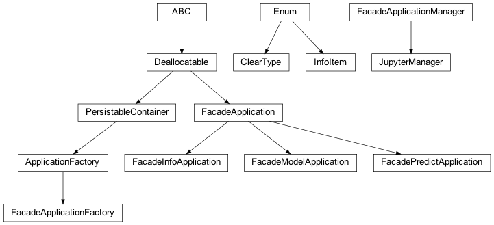

zensols.deeplearn.cli package¶
Submodules¶
zensols.deeplearn.cli.app¶

Command line entry point to the application using the application CLI.
-
class
zensols.deeplearn.cli.app.ClearType(value)[source]¶ Bases:
enum.EnumIndicates what type of data to delete (clear).
-
batch= 1¶
-
source= 2¶
-
-
class
zensols.deeplearn.cli.app.FacadeApplication(config, facade_name='facade', facade_path=None, config_factory_args=<factory>, config_overwrites=None)[source]¶ Bases:
zensols.persist.dealloc.DeallocatableBase class for applications that use
ModelFacade.-
CLI_META= {'mnemonic_excludes': {'clear_cached_facade', 'create_facade', 'deallocate', 'get_cached_facade'}}¶ Tell the command line app API to igonore subclass and client specific use case methods.
-
__init__(config, facade_name='facade', facade_path=None, config_factory_args=<factory>, config_overwrites=None)¶ Initialize self. See help(type(self)) for accurate signature.
-
config: zensols.config.configbase.Configurable¶ The config used to create facade instances.
-
config_factory_args: Dict[str, Any]¶ The arguments given to the
ImportConfigFactory, which could be useful for reloading all classes while debugingg.
-
config_overwrites: zensols.config.configbase.Configurable = None¶ A configurable that clobbers any configuration in
configfor those sections/options set.
-
facade_path: pathlib.Path = None¶ The path to the model, or if
None, use the last trained model, which is directory specified bypath.
-
get_cached_facade(**kwargs) → zensols.deeplearn.model.facade.ModelFacade¶ Return a created facade that is cached in this application instance.
- Return type
-
-
class
zensols.deeplearn.cli.app.FacadeApplicationFactory(package_resource, app_config_resource='resources/app.conf', children_configs=None, reload_factory=False, reload_pattern=None)[source]¶ Bases:
zensols.cli.app.ApplicationFactoryThis is a utility class that creates instances of
FacadeApplication. It’s only needed if you need to create a facade without wanting invoke the command line attached to the applications.It does this by only invoking the first pass applications so all the correct initialization happens before returning factory artifacts.
There mst be a
FacadeApplication.facade_nameentry in the configuration tied to an instance ofFacadeApplication.- See
-
__init__(package_resource, app_config_resource='resources/app.conf', children_configs=None, reload_factory=False, reload_pattern=None)¶ Initialize self. See help(type(self)) for accurate signature.
-
create_facade(args=None, app_args=None)[source]¶ Create the facade tied to the application without invoking the command line.
-
package_resource: Union[str, zensols.util.pkgres.PackageResource]¶
-
class
zensols.deeplearn.cli.app.FacadeApplicationManager(cli_class=None, factory_args=<factory>, cli_args_fn=<factory>, reset_torch=True, allocation_tracking=False, logger_name='notebook', default_logging_level='WARNING', progress_bar_cols=120, browser_width=95, config_overwrites=<factory>)[source]¶ Bases:
objectA very high level client interface making it easy to configure and run models from an interactive environment such as a Python REPL or a Jupyter notebook (see
JupyterManager)-
__init__(cli_class=None, factory_args=<factory>, cli_args_fn=<factory>, reset_torch=True, allocation_tracking=False, logger_name='notebook', default_logging_level='WARNING', progress_bar_cols=120, browser_width=95, config_overwrites=<factory>)¶ Initialize self. See help(type(self)) for accurate signature.
-
allocation_tracking: Union[bool, str] = False¶ Whether or not to track resource/memory leaks. If set to
stack, the stack traces of the unallocated objects will be printed. If set tocountsonly the counts will be printed. If set toTrueonly the unallocated objects without the stack will be printed.
-
cleanup(include_cuda=True, quiet=False)[source]¶ Report memory leaks, run the Python garbage collector and optionally empty the CUDA cache.
- Parameters
include_cuda (
bool) – ifTrueclear the GPU cachequiet (
bool) – do not report unallocated objects, regardless of the setting ofallocation_tracking
-
cli_args_fn: List[str]¶ Creates the arguments used to create the facade from the application factory.
-
cli_class: Type[zensols.deeplearn.cli.app.FacadeApplicationFactory] = None¶ The class the application factory used to create the facade.
-
config(section, **kwargs)[source]¶ Add overwriting configuration used when creating the facade.
- Parameters
section (
str) – the section to be overwritten (or added)kwargs – the key/value pairs used as the section data to overwrite
- See
-
config_overwrites: Dict[str, Dict[str, str]]¶ Clobbers any configuration in
configfor those sections/options set.
-
create_facade(*args)[source]¶ Create and return a facade with columns that fit a notebook.
- Parameters
args – given to the
cli_args_fnfunction to create arguments passed to the CLI- Return type
-
default_logging_level: dataclasses.InitVar[str] = 'WARNING'¶ If set, then initialize the logging system using this as the default logging level. This is the upper case logging name such as
WARNING.
-
property
facade¶ The current facade for this notebook instance.
- Return type
- Returns
the existing facade, or that created by
create_facade()if it doesn’t already exist
-
factory_args: Dict[str, Any]¶ obj`cli_class` on create.
- Type
The arguments given to the initializer of
-
progress_bar_cols: dataclasses.InitVar[int] = 120¶ The number of columns to use for the progress bar.
-
run(display_results=True)[source]¶ Train, test and optionally show results.
- Parameters
display_results (
bool) – ifTrue, write and plot the results
-
show_leaks(output='counts', fail=True)[source]¶ Show all resources/memory leaks in the current facade. First, this deallocates the facade, then prints any lingering objects using
Deallocatable.Important:
allocation_trackingmust be set toTruefor this to work.
-
-
class
zensols.deeplearn.cli.app.FacadeInfoApplication(config, facade_name='facade', facade_path=None, config_factory_args=<factory>, config_overwrites=None)[source]¶ Bases:
zensols.deeplearn.cli.app.FacadeApplicationContains methods that provide information about the model via the facade.
-
CLI_META= {'mnemonic_overrides': {'print_information': 'info', 'result_summary': 'resum'}, 'option_overrides': {'debug_value': {'long_name': 'execlevel', 'short_name': None}, 'info_item': {'long_name': 'item', 'short_name': 'i'}}}¶
-
__init__(config, facade_name='facade', facade_path=None, config_factory_args=<factory>, config_overwrites=None)¶ Initialize self. See help(type(self)) for accurate signature.
-
-
class
zensols.deeplearn.cli.app.FacadeModelApplication(config, facade_name='facade', facade_path=None, config_factory_args=<factory>, config_overwrites=None, use_progress_bar=False)[source]¶ Bases:
zensols.deeplearn.cli.app.FacadeApplicationTest, train and validate models.
-
CLI_META= {'mnemonic_excludes': {'clear_cached_facade', 'create_facade', 'deallocate', 'get_cached_facade'}, 'mnemonic_overrides': {'batch': {'option_includes': {'limit'}}, 'clear': {'name': 'rm', 'option_excludes': 'use_progress_bar'}, 'early_stop': {'name': 'stop', 'option_includes': {}}, 'result': {'option_includes': {}}, 'train_production': 'trainprod'}, 'option_overrides': {'clear_type': {'long_name': 'type', 'short_name': None}, 'use_progress_bar': {'long_name': 'progress', 'short_name': 'p'}}}¶
-
__init__(config, facade_name='facade', facade_path=None, config_factory_args=<factory>, config_overwrites=None, use_progress_bar=False)¶ Initialize self. See help(type(self)) for accurate signature.
-
batch(limit=1)[source]¶ Create batches (if not created already) and print statistics on the dataset.
- Parameters
limit (
int) – the number of batches to print out
-
clear(clear_type=<ClearType.batch: 1>)[source]¶ Delete generated data.
- Parameters
clear_type (
ClearType) – the type of data to delete
-
train()[source]¶ Train the model and dump the results, including a graph of the train/validation loss.
-
-
class
zensols.deeplearn.cli.app.FacadePredictApplication(config, facade_name='facade', facade_path=None, config_factory_args=<factory>, config_overwrites=None)[source]¶ Bases:
zensols.deeplearn.cli.app.FacadeApplicationAn applicaiton that provides prediction funtionality.
-
CLI_META= {'mnemonic_excludes': {'clear_cached_facade', 'create_facade', 'deallocate', 'get_cached_facade'}, 'mnemonic_overrides': {'predictions': {'name': 'preds'}}}¶
-
-
class
zensols.deeplearn.cli.app.InfoItem(value)[source]¶ Bases:
enum.EnumIndicates what information to dump in
FacadeInfoApplication.print_information().-
batch= 5¶
-
conf= 4¶
-
meta= 1¶
-
model= 3¶
-
param= 2¶
-
-
class
zensols.deeplearn.cli.app.JupyterManager(cli_class=None, factory_args=<factory>, cli_args_fn=<factory>, reset_torch=True, allocation_tracking=False, logger_name='notebook', default_logging_level='WARNING', progress_bar_cols=120, browser_width=95, config_overwrites=<factory>)[source]¶ Bases:
zensols.deeplearn.cli.app.FacadeApplicationManagerA facade application manager that provides additional convenience functionality.
-
__init__(cli_class=None, factory_args=<factory>, cli_args_fn=<factory>, reset_torch=True, allocation_tracking=False, logger_name='notebook', default_logging_level='WARNING', progress_bar_cols=120, browser_width=95, config_overwrites=<factory>)¶ Initialize self. See help(type(self)) for accurate signature.
-
create_facade(*args)[source]¶ Create and return a facade with columns that fit a notebook.
- Parameters
args – given to the
cli_args_fnfunction to create arguments passed to the CLI- Return type
-